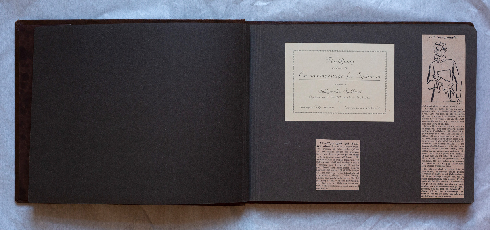
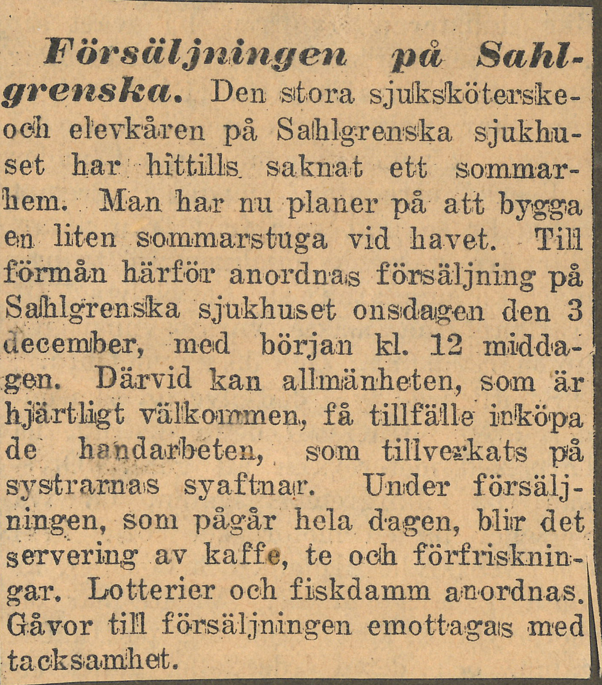

Uppslag 1
{kind=link}



Försäljning
till förmån för
En sommarstuga för Systrarna
anordnas å
Sahlgrenska Sjukhuset
Onsdagen den 3 Dec. 1930 med början kl. 12 midd.
Servering av Kaffe, Thé m.m. Gåvor mottages med tacksamhet

Försäljningen på Sahl grenska. Den stora sjuksköterske och elevkåren på Sahlgrenska sjukhu set har hittills saknat ett sommar hem. Man har nu planer på att bygga en liten sommarstuga vid havet. Till förmån härför anordnas försäljning på Sahlgrenska sjukhuset onsdagen den 3 december, med början kl. 12 midda gen. Därvid kan allmänheten, som är hjärtligt välkommen, få tillfälle inköpa de handarbeten, som tillverkats på systrarnas syaftnar. Under försälj ningen, som pågår hela dagen, blir det servering av kaffe, te och förfrisknin gar. Lotterier och fiskdamm anordnas. Gåvor till försäljningen emottages med tacksamhet.

Till Sahlgrenska sjukhuset skola vi gå på onsdag. Inte för att lägga in oss och bli behandlad av doktor Sven. Hur väl man än blir mottagen, när man kommer i det ärendet, är det liksom litet trevligare att gå till Sahl grenska för att ha roligt. Det kan man som sagt göra på onsdag. Bilden lär ge en aning om, vad det är fråga om. Den söta systern, tecknad med sann förståelse av Mr. Gaw håller på att sälja en docka. Den har hon sytt kläder till på systrarnas syaftnar, och allt som har knåpats ihop under dessa skall nu avyttras till den välvilligt stämda all mänheten. På onsdag smäller det. Då öppnas försäljningen av alla de hand arbeten, såsom kuddar, dukar, barn kläder m.m., m.m., som systrarna till verkat samt av de gåvor som skänkts. Så har man en del saker till utlottning. Bl.a. en båt och en grammofon. En fiskdamm blir det också, som kommer att förestås av en pigg fiskarflicka. Hon utlovar utmärkta napp. För att det ska bli riktig fräs på kommersen, stimuleras denna genom servering av kaffe, te och förfriskningar. Kl. 12 på middagen börjas det, och så pågår försäljningen hela dagen. Vi för moda att det blir rusning. Allmänheten har ju all anledning att visa sin tack samhet mot sjuksköterskekåren på Sahl grenska, och då man nu hoppas få in slantar till en liten sommarstuga, be sluta vi oss för att möta upp alle man på Sahlgrenska nästa onsdag.